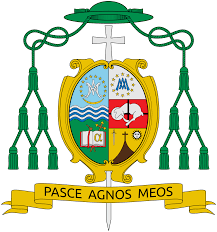

2035 by Diocese of Pasig.
Bishop Mylo Hubert Claudio Vergara was born in Manila last October 23, 1962. He finished his studies at the Ateneo de Manila High School, B.S. Management Engineering and Masters in Philosophy at the Ateneo de Manila University. He finished his Licentiate in Sacred Theology at the Loyola School of Theology and Doctorate in Sacred Theology at the University of Santo Tomas.After his ordination to the priesthood last March 24, 1990 for the Archdiocese of Manila at the end of 1994, he became Dean of Studies and Professor of Philosophy of the Holy Apostles Senior Seminary, EDSA, Guadalupe, Makati City. He also served as parochial vicar of the Parish of St. Andrew the Apostle.
From 1994 to 2001, he became Rector of the same Seminary and at the same time, a member of the Presbyteral Council and head Chaplain of associations. He became Parish Priest at the Santa Rita de Cascia Parish, Philamlife Homes, Quezon City from 2001 to 2004, President of Radio Veritas Global Broadcasting System in 2002, and Chancellor of the newly established Diocese of Cubao last 2003. In 2004, he was appointed Parish Priest of the Parish of the Holy Sacrifice University of the Philippines, Diliman, Quezon City. Last Feb. 12, 2005 he was appointed Bishop of San Jose, Nueva Ecija and was consecrated last April 30.He was the CBCP Chairman of the Episcopal Commission on Social Communications and Mass Media (2013-2019)
The Holy Father, Pope Benedict XVI has appointed Most Rev. Mylo Hubert Claudio Vergara, previously the Bishop of San Jose, Nueva Ecija as the second Bishop of the Diocese of Pasig, replaces Bishop Emeritus Francisco C. San Diego, D.D. who retired last December 23, 2010.
In 2021, Bishop Mylo Vergara was elected as Vice-President of the Catholic Bishops Conference of the Philippines with Bishop Pablo Virgilio David (of Diocese of Kalookan) as President.
On September 21, 2023, Bishop Mylo Vergara was appointed by Pope Francis as the apostolic administrator of the Diocese of San Pablo upon the resignation of its Bishop, Most Rev. Buenaventura Famadico, due to the latter's "recent hospitalization because of a serious heart ail".
October 23, 1962
November 4, 1989
March 24, 1990
1990 to 1994
1994 to 2001
1999 to 2000
2000 to 2003
2002
2003
2001 to 2004
2003
2004
February 12, 2005
April 30, 2005
May 14, 2005
April 20, 2011
June 23, 2011
2021
September 21, 2023

MOST. REV. MYLO HUBERT C. VERGARA, D.D
BISHOP, DIOCESE OF PASIG
Appointed:
Ordination:
Consecration:
Date of Birth:
Motto:
April 20, 2011
March 24, 1990
(Jaime Cardinal Sin)
April 30, 2005
(Gaudencio Cardinal Rosales)
October 23, 1962
Pasce agnos meos (Feed My Lambs)
ABOUT BISHOP MYLO
TIMELINE JOURNEY OF BISHOP MYLO
The birth of Bishop Mylo Hubert C. Vergara
Bishop Mylo was ordained a deacon at the Archdiocese of Manila.
Bishop Mylo was ordained to the priesthood by Jaime Cardinal Sin, the Archbishop of Manila, at the Manila Cathedral.
Bishop Mylo assigned as dean of studies and Professor of Philosophy at the Holy Apostles Senior Seminary in Makati.
Bishop Mylo served as rector of the of Holy Apostles Senior Seminary in Makati and at the same time, a member of the Presbyteral Council and head Chaplain of associations.
Bishop Mylo assigned as chaplain of the Chapel of the Eucharistic Lord at SM Megamall in Mandaluyong City.
Bishop Mylo assigned as chaplain of Santo Niño de Paz Greenbelt Chapel in Makati.
Bishop Mylo became President of Radio Veritas Global Broadcasting System.
Bishop Mylo assigned as the Spiritual Director of Archdiocesan Association of Saint John Mary Vianney.
Bishop Mylo became Parish Priest at the Santa Rita de Cascia Parish, Philamlife Homes, Quezon City.
Bishop Mylo appointed as Chancellor at the newly established diocese, the Diocese of Cubao.
Bishop Mylo became Parish Priest at the Parish of the Holy Sacrifice University of the Philippines, Diliman, Quezon City.
Bishop Mylo was appointed as Bishop of San Jose, Nueva Ecija by the late St. Pope John Paul II.
Bishop Mylo was consecrated as bishop by the Archbishop Emeritus of Manila, Gaudencio Cardinal Rosales at the Manila Cathedral.
Bishop Mylo was installed as the third bishop of the Diocese of San Jose de Nueva Ecija at the Cathedral of St. Joseph the Worker in San Jose, Nueva Ecija.
Bishop Mylo was appointed as Bishop of Pasig by the late Pope Benedict XVI replaces Bishop Emeritus Francisco C. San Diego, D.D. who retired last December 23, 2010.
Bishop Mylo was installed as the second bishop of the Diocese of Pasig at the Cathedral of Immaculate Conception, Pasig City, Metro Manila.
Bishop Mylo was elected as the Vice-President of Catholic Bishop's Conference of the Philippines (CBCP) with Most. Rev. Pablo Virgilio David, D.D as President.
Bishop Mylo was appointed by Pope Francis as the Apostolic Administrator of the Diocese of San Pablo in San Pablo, Laguna upon the resignation of its Bishop, Most. Rev. Buenaventura Famadico, D.D due to the latter's "recent hospitalization because of a serious heart ailment."
COAT OF ARMS OF BISHOP MYLO
"PASCE AGNOS MEOS"
“Pasce agnos meos” literally translated as “Feed my lambs” (Jn. 21, 17) – this is our Bishop’s motto which expressed his faith like that of Peter who was called by Jesus to translate his love for him into action. Bishop Mylo Hubert Claudio Vergara officially takes over as the second Bishop of Pasig with the Canonical Installation last June 23, 2011, 3 p.m. at the Immaculate Conception Cathedral, Malinao, Pasig.
The symbol on the left side of the shield represents the Diocese of Pasig. On the right are his personal symbols: the 12 stars symbolizing the Holy Apostles and the Seminary where he received seminary formation, the symbol of Mary as the Immaculate Conception, Patroness of both Archdiocese of Manila and Diocese of Cubao, the meek lamb symbolizing the offering his life as a sacrifice for the people he is called to minister. It is also symbolical of Jesus, the Good Shepherd and the parish in Novaliches where his vocation flourished.
The three symbols on the lower crest represent the saints who molded his vocation – Ignatius of Loyola, John of the Cross, Teresa of Avila, Therese of the Child Jesus, and Thomas Aquinas.
Let us pray of our beloved Bishop as he brings light and hope to the flock of the Diocese of Pasig